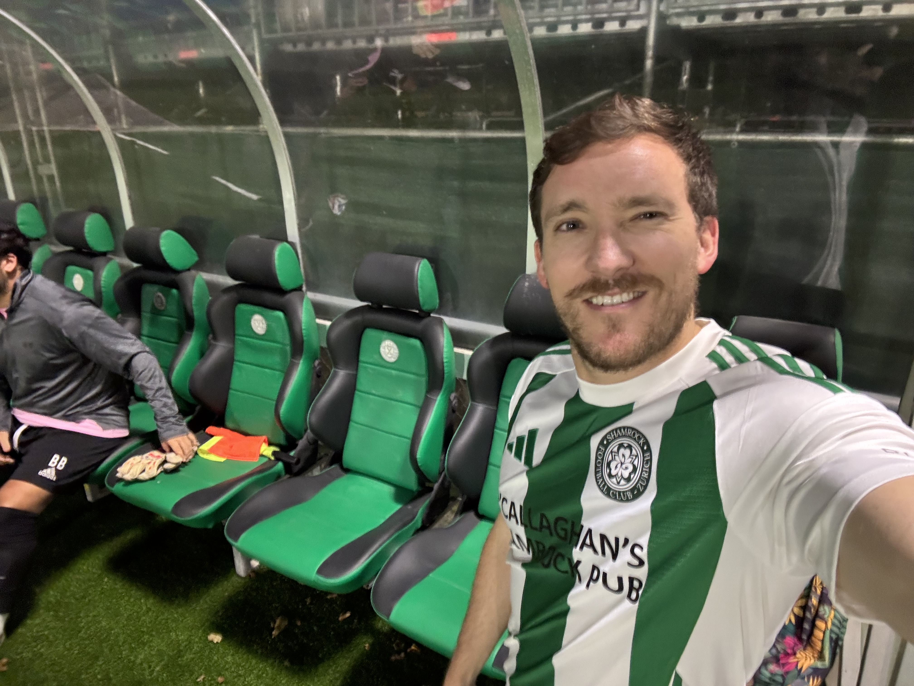

Extracurriculars
Outdoor Activities
This website template requires that I write something here, so I'll note that I occasionally end up outside. While it can be very cold and at times unpleasant, I'd recommend you give it a chance.

Soccer
The beautiful game was named as such by someone who clearly never saw me play it. Regardless, I do play every so often and have had the pleasure of watching LFC play at Anfield and beyond.
Pets
I actually don't currently have a dog nor any other pets of any kind. I have, however, watched my friend's dog on several occasions and been told that this may make me seem more relatable.
You've gone too far! There is literally nothing else of interest to know about me.